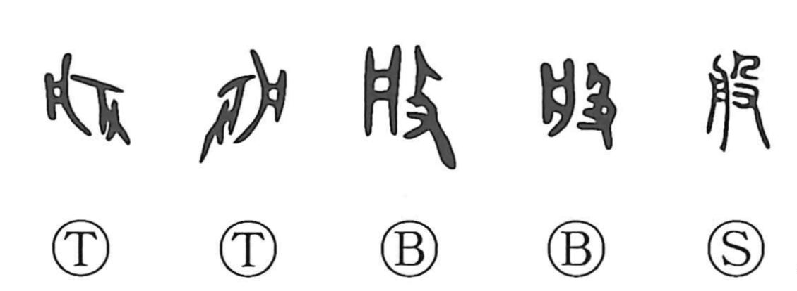

般

Kun: | On: han
kind ・ sort ・ general ・ all
Explanation
A compound character formed from 舟 and 殳. Here 舟 does not depict a boat but the shape of 盤—a tub, bowl, or plate used to hold and carry things—while 殳 conveys the act of striking. In this configuration, the vessel is understood as a sound-making implement: 般 originally pictured beating a plate as an instrument, which lends it associations of enjoyment (as in 般楽) and, by extension, of turning over or going round (as in 般旋). 般 is in fact the earlier form of 盤 and is often used in the same way; from this base the meaning broadened to the familiar sense of “general, all, various,” seen in compounds such as 一般, 諸般, and 先般.